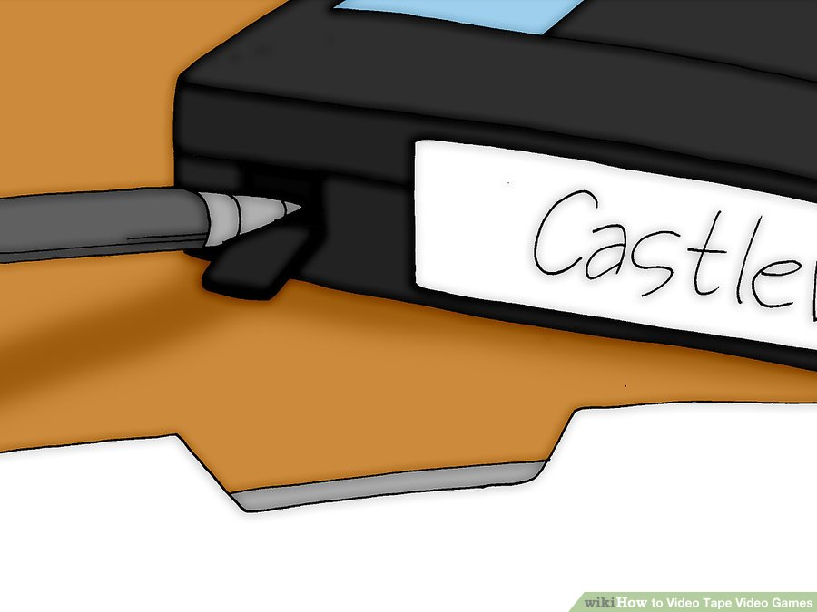

Table of Contents
- Part 1 of 5: For a Video
- Part 2 of 5: Tips for video
- Part 3 of 5: For a DVD/CD
- Part 4 of 5: Tips for DVD/CD
- Part 5 of 5: How to Upload Your Video on YouTube
How to Video Tape Video Games
Playing video games can be stressful. So, what is better than watching yourself play? You can record your video games for reference, entertainment and good memories later, but you're not a tech nut? Forget digital recording, just directly record it onto a video tape on your VCR!
Part 1 of 5: For a Video
- Make sure you have a VCR that records
- Set VCR to record whatever is on the screen
- Set up your game system, plug it in, and turn on the TV to the channel that you play your games on.
- Press the record button, usually a red circle, on your VCR or remote control.
- Press stop, the black squre to cease recording.
- Label the video tape. 
- Pull off the tape on the outside of the video tape when you have filled it up if you don't want it taped over.